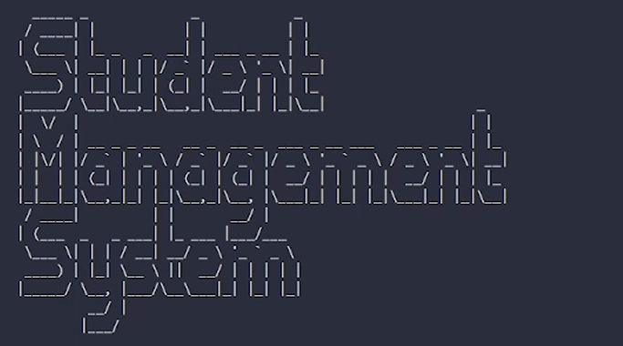
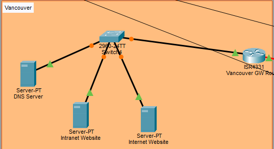
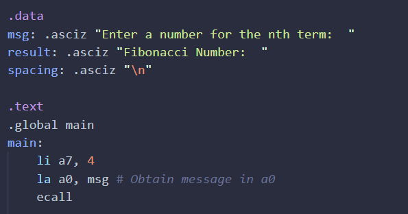
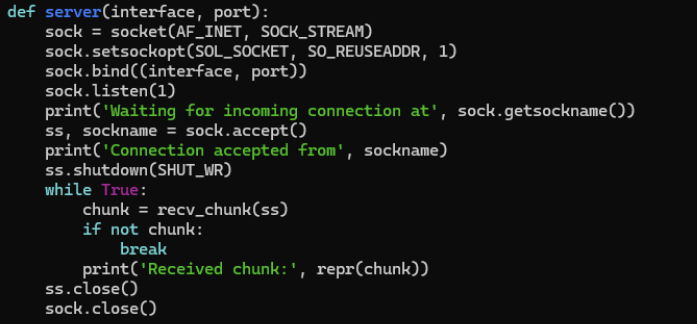

Joshua — Networking and IT Security Student
Nice to Meet You!

Portfolio — Projects Page
Student Management System (Python, SQL)
This is a project made using Python and MySQL for an Object Oriented
Programming course as a final project. While run locally, it supports
many different features: Local login, adding/removing students & faculty,
and viewing account information.
* Click to view the public repository here!

Designing and Implementing Networks (Packet Tracer)
A collaborative project of four people, to design, troubleshoot and
implement networks in the "Packet Tracer" software. It features the
use of VLAN trunking, inter-VLAN routing, OSPF, and BGP for internal
and external communication outside of autonomous systems.

Fibonacci Sequence (RISC-V)
An individual program done by me in a collaborative project, using the
RISC-V assembly architecture. It simulates the n-th term within the
Fibonacci sequence both in an iterative and recursive manner.

Multithreaded Sockets (Python)
An assignment done for an Operating Systems course to simulate client,
server, and socket communication. It uses the 'asyncio' library to allow
asynchronous communication using coroutines.
